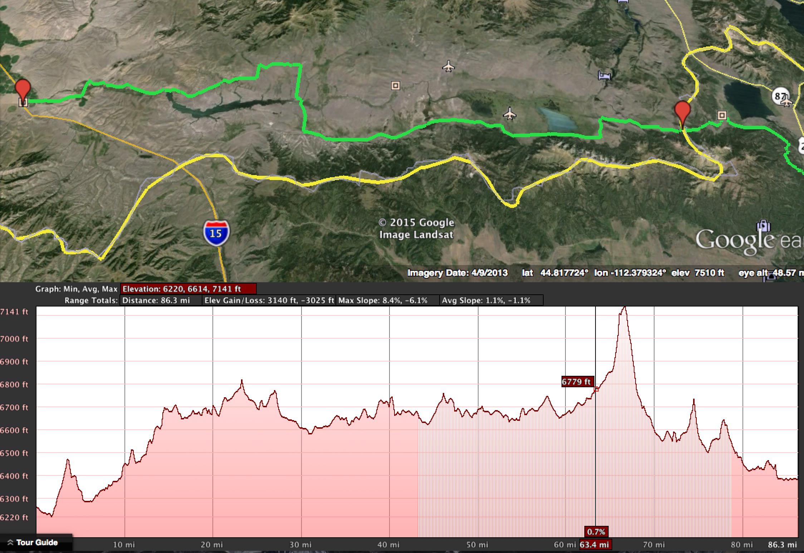
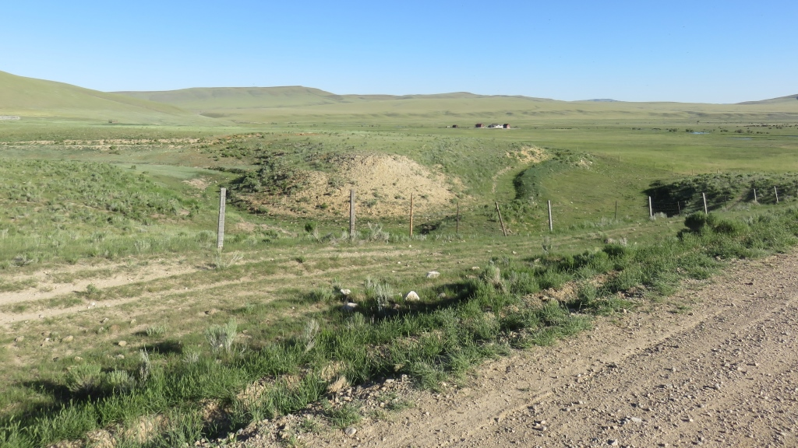
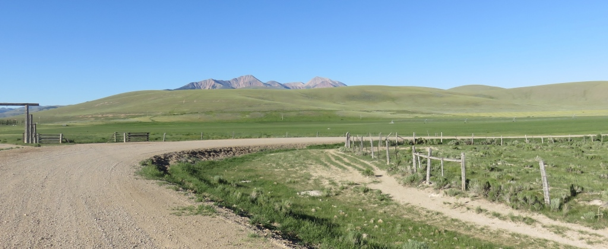
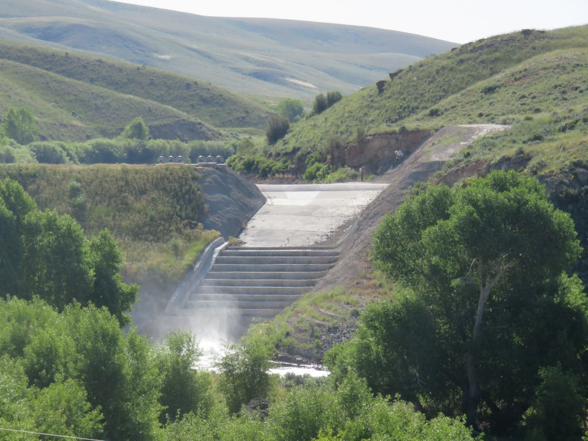
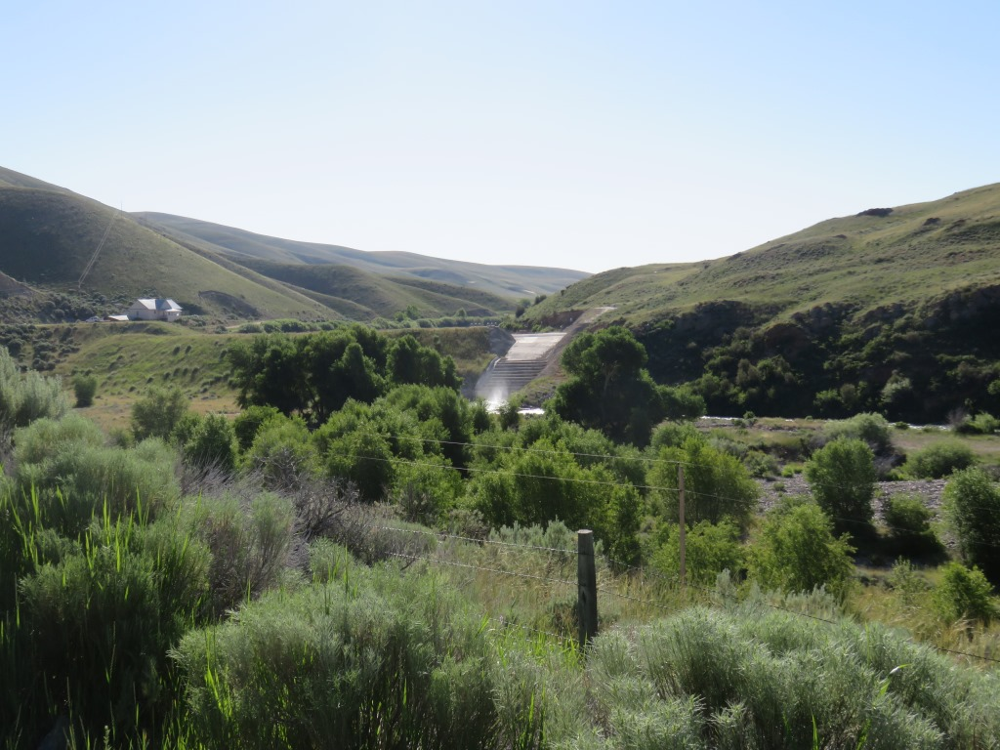
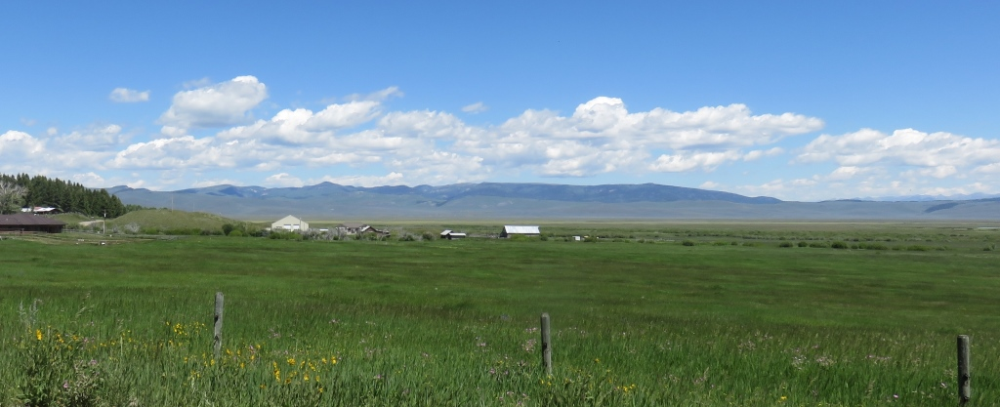
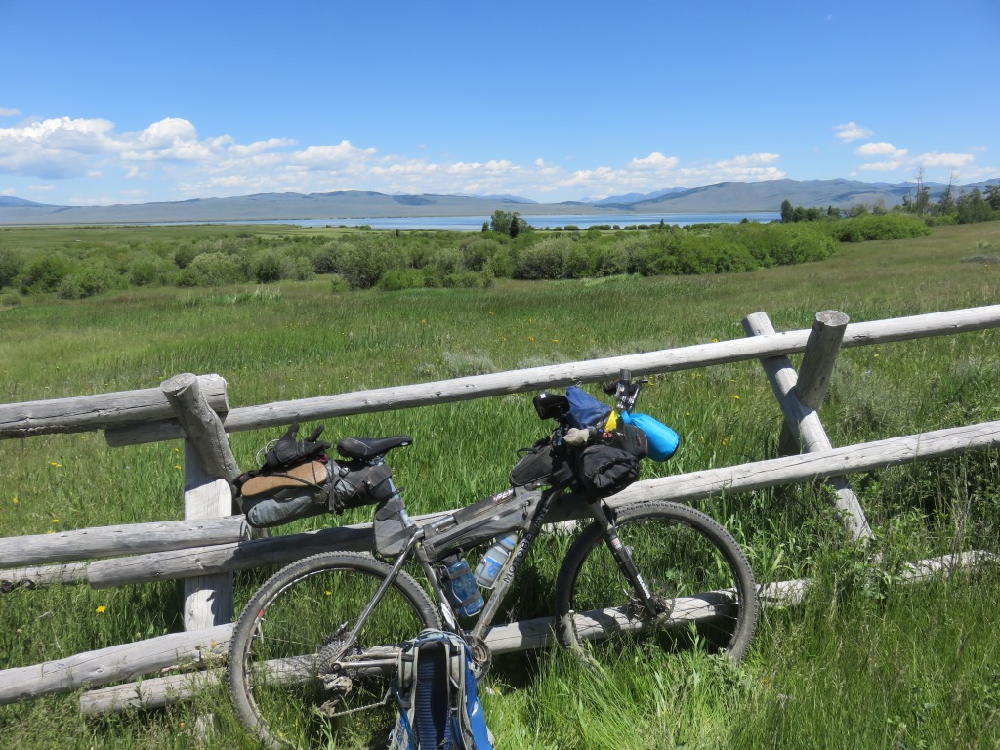
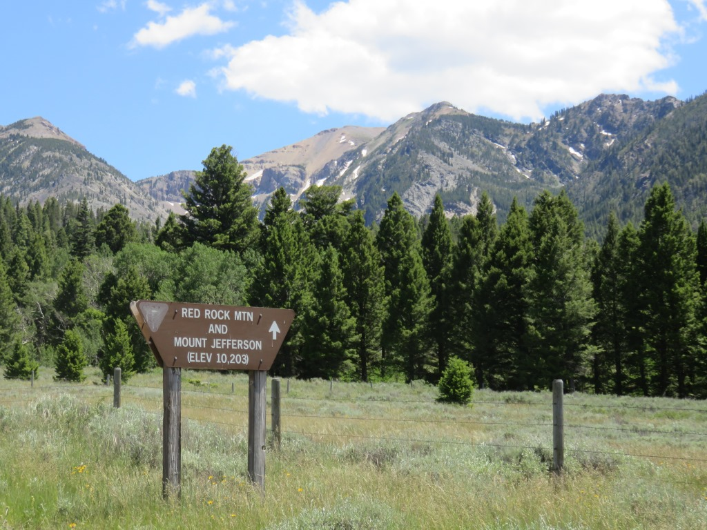

Lima - flat and dry
Start of my second week. I felt like I'm making progress though I'd been in Montana for 10 days. I was out in the sun for the whole day going east toward the Grand Tetons. This area was the flattest and most open so far. I road along this really dry place with the Continental Divide to the south most of the day.

I road out of Lima and then along the stream coming out of the dam for the first 13 miles. I road past the dam for the reservoir and though it wasn't always visible the reservoir backed up the river about 20 miles.

The gravel road was good most of the way

Lima dam

Lima Dam and Reservoir

The road continued into the valley above the damThis was Montana's version of a desert. I would learn in a few days that the Wyoming versions were much tougher

Took a break after riding through the town of Lakeview and not realizing I was through until I was.

The climb up to Red Rock pass was not so bad. I was getting use to the hills.

Idaho
Finally a new state. I was happy to get out of Montana and looked forward to getting into Wyoming the following day.
Some single track and woods riding before we got to Mack's Inn. Stopped when I got to US20 for supplies at the first gas station since Lima. I road down US 20 to get to Macks Inn
This was a whole complex along Henrys Fork (Snake River). It took a while to get a room. I had to go back twice to get something that worked. At first I was across the street (US20- 4 lane road with wide shoulders) and then I was given a cabin that someone's luggage was still in. It also appeared it might fall in on me. The third room was on the second floor of the newer building along the river. Photos are from the website.
Had a good pizza and some ice cream to end my day. Room worked out very well with some air flow.
- All in all a good day and glad to be moving on to Wyoming
June 23 - ~90 miles - Lima to Island Park, ID
See full screen map To go places and do things that I've never done before – that’s what living is all about.Text by Jim O'Brien . Photographs by Jim O'Brien (unless otherwise noted)TD on Flickr.